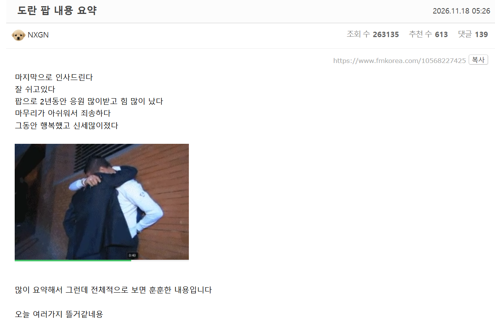

티원 팝이라는 선수들이랑 팬이랑 소통하는 서비스인데 팬들한테 마지막으로 메시지 남김
썰쟁이 찌라시로는 도란 굿바이 영상 티원에서 만들었는데 도란이 거절했다는 말이 있음
그래도 작년에 비상 걸린 티원 와서 진짜 잘해줬는데..

티원 팝이라는 선수들이랑 팬이랑 소통하는 서비스인데 팬들한테 마지막으로 메시지 남김
썰쟁이 찌라시로는 도란 굿바이 영상 티원에서 만들었는데 도란이 거절했다는 말이 있음
그래도 작년에 비상 걸린 티원 와서 진짜 잘해줬는데..
티원팬들은 그런거 몰라
겜안분들 존나 많네 올해는 아쉬웠어도 작년엔 굵직한게 많았고 msi랑 롤드컵 간것도 도란 몫이 컸는데 마냥 욕하는건 분탕종자임
이전부터 지적되었던 유리 멘탈 문제가 롤드컵 우승하고 티원에서 멘탈 단련하면서 케리아처럼 극복할줄 알았는데 극복 못 해서 폼이 떨어진 케이스
약간 애증의 선수라 어딜가서도 잘했으면 좋겠음
그래도 작년에 우승했었고 고생했다. 티원은 다른 팀보다 욕 많이 먹는 자리라서...
딱 1년까진 좋았는데 그 뒤에 1년은 너무 볼쾌한 경험이었다
ㅂㅂ
고생했다
암베사 하나는 기깔나게 잘했는데
고점의 도란하면 딱 작년 카밀 생각나고 바론 서커스랑 바텀에서 일당백 한거 생각나는데, 올해는 그거의 반도 못 보여준듯. 기회는 충분했고 이제는 프로로써 책임져야할듯.. 고생했다
월즈 들었으니 서로 윈윈이긴 하겠네
시바 그냥 함 탑 시팅해서 쫙 밀어줬으면 안됐냐
작년만큼만 해줬더라면
잘하든 못하든 수고했지
요즘 롤판 악플러들이랑 특히 손흥민 까고싶어하는 루저들은 왜 현재 폼으로 과거의 업적을 부정함?
현재 못한다 > 그래 그럴수 있음
현재 못하니 과거에 이룬것들은 전부 뽀록이다 > ? 미친년들인가 진짜
이번 시즌 도란 부진했던 이유 중에 추측 가능한 게 뭐가 있었을까
T1 특유의 시즌 중 유독 많은 광고와 외부 행사로 인한 연습량 부족?
라인 포지션별 퀘스트 메타에 대해 적응하지 못한 거?
암튼 도란 T1 이적해올 때도 엄청 안쓰러웠는데
떠날 때도 참 안쓰럽게 떠나네
본인 스스로 못했다고 생각하고 나가는거 아쉬운갑지 뭐